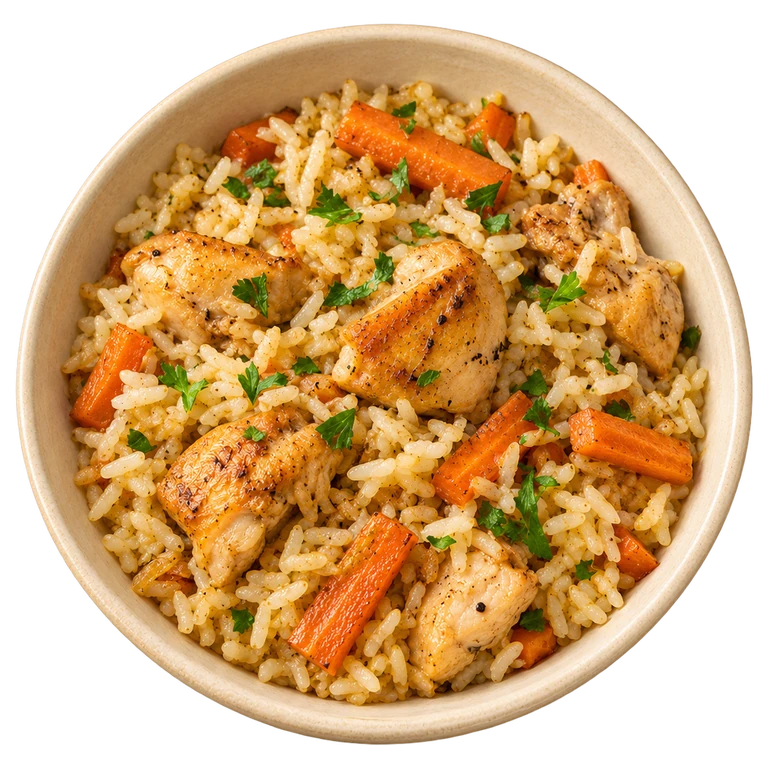
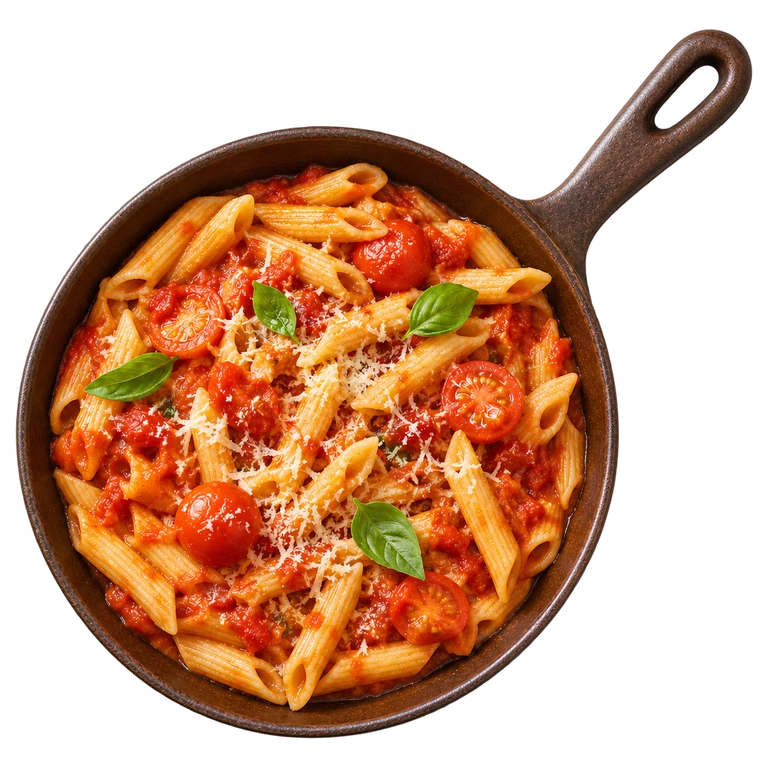
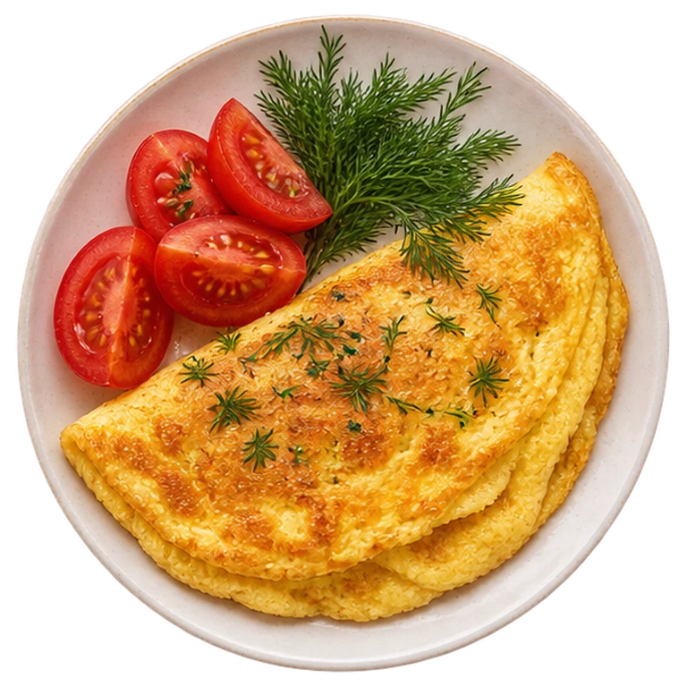
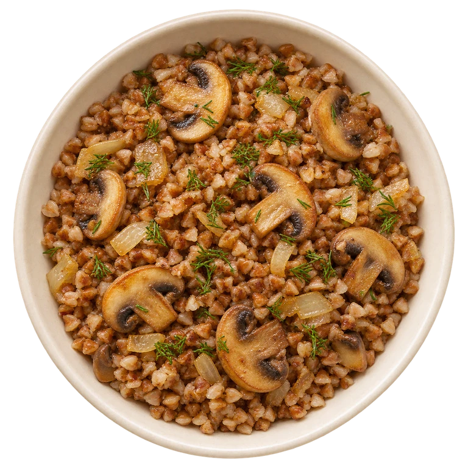
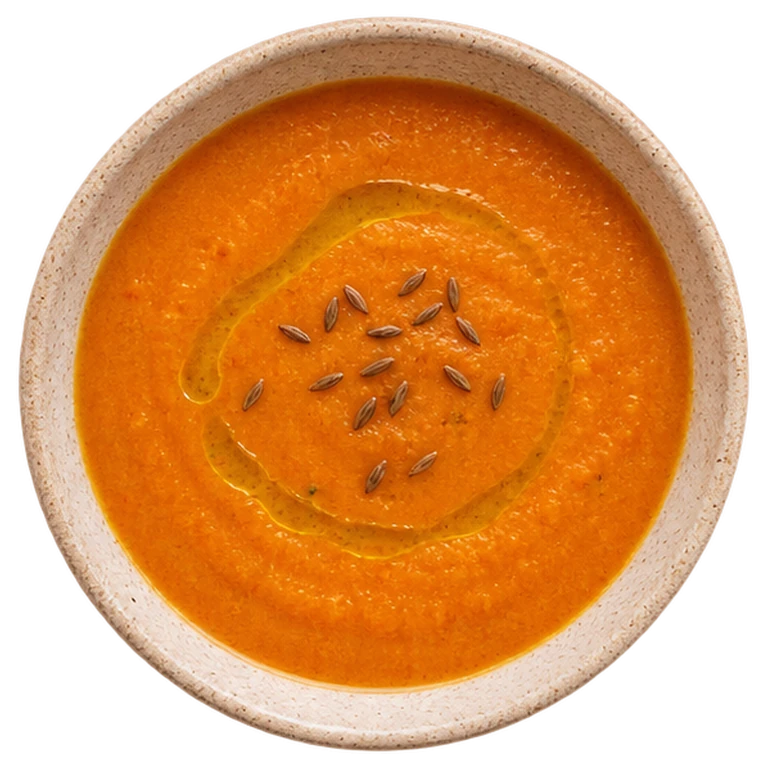
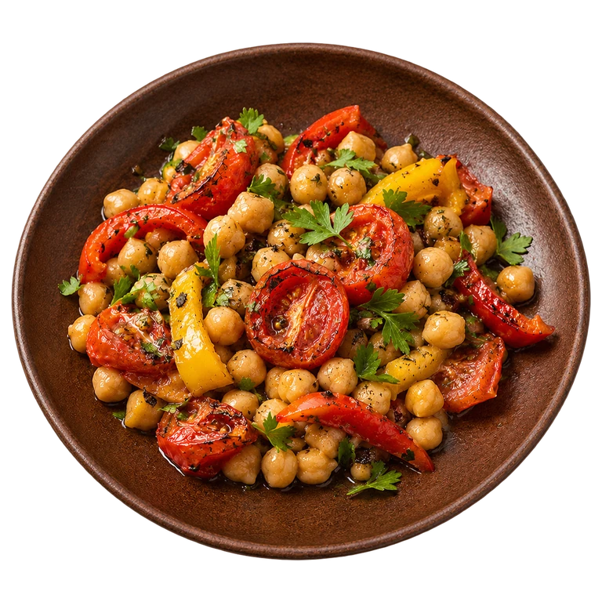
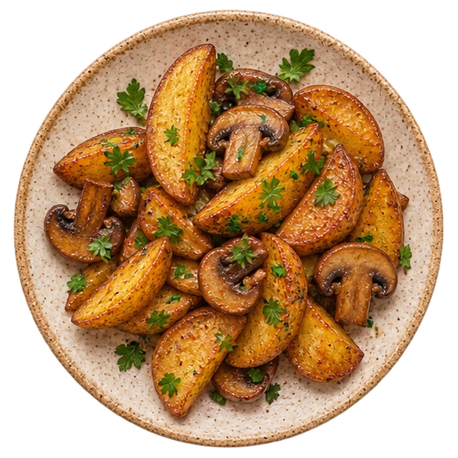
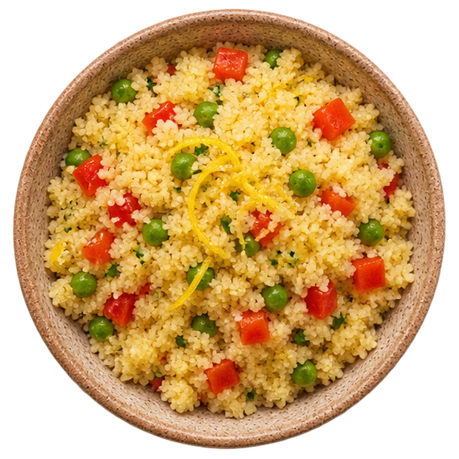

Добавить в продукты
Исключить из подбора
Вода, соль и растительное масло считаются домашним запасом. При аллергии проверьте состав на упаковке.








Таких рецептов в каталоге пока нет. Попробуйте другое название.
Включите JavaScript, чтобы пользоваться подбором, пошаговой готовкой и корзиной.
Проверяем продукты и ограничения.
Проверьте недостающие продукты.
Измените продукты, время или бюджет.
Выбранные условия сохранены.